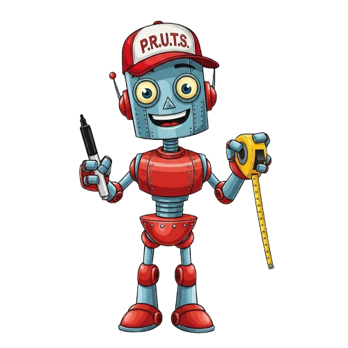
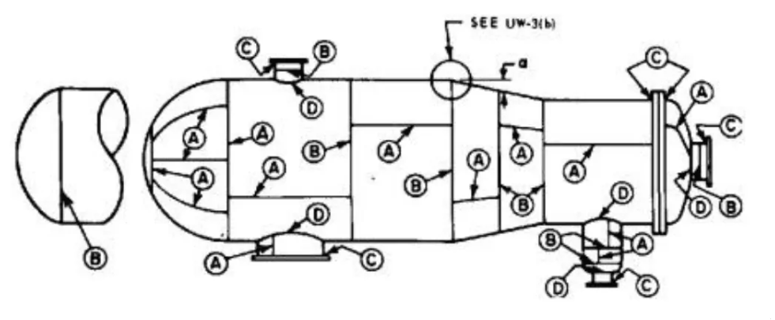

Hallo, Ik ben P.R.U.T.S
(Pijplas Radiografie Ultieme Technische Sidekick)
Kies de procedure:
Selecteer procedure
EN-Klasse A
EN-Klasse B
ASME
Klantprocedure:
Klantprocedure:
Selecteer procedure
RT16172 Sabic
RT14171 Sitech
RT 2023 0059 Haffmans
Diameter (De) in mm:
Wanddikte (t) in mm:
Opstelling:
DWSI
SWSI
DWDI
Centraal of Excentrisch:
Nee
Centraal
Excentrisch
Stralingsbron:
X-ray
Se-75
Ir-192
Ovenmateriaal:
Nee
Ja
Ovaaltje:
Nee
Ja
Lasbreedte (mm):
Brongrootte in mm:
Object Film Afstand (OFA) in mm:
Bron Film Afstand (FFD) in mm:
Plaats van de BKI:
BKI bronzijde
BKI Filmzijde
Lastype:
A
B
C
D
Lasoverdikte (mm):
Controleer
Resultaten
Aantal opnames: 2 bij opstelling 11/F , 3 bij opstelling 12/G
Bundel & Dikte Simulatie
Brede (60°)
Smalle (40°)
Opstelling 5/8/13/14 (Klasse B)
Opstelling 2 (Klasse B)
Opstelling 5/8/13/14 (Klasse A)
Opstelling 2 (Klasse A)
×
Lastype Categorieën (ASME)

×
×
Timer
D7
00:00
Klaar voor start
Tijd aanpassen
Minuten
:
Seconden
Start
Pauze
Reset
Let op:
Vergrendel je telefoon niet handmatig. Het scherm blijft automatisch aan zodat het alarm betrouwbaar afgaat.
Stop Alarm
00:00